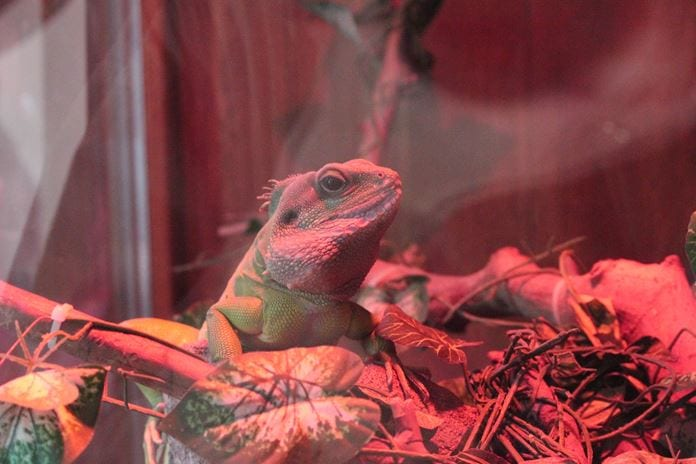

Biyolojik Çeşitlilik ve Gözlem
Sürüngen Evi, yılanlardan kertenkelelere, kaplumbağalardan timsahlara kadar çok geniş bir tür çeşitliliğini bir araya getirerek ziyaretçilere doğanın gizemli ve çoğu zaman gözden kaçan canlılarını yakından gözlemleme fırsatı sunar. Özel olarak tasarlanmış teraryumlar ve akvaryumlar sayesinde bu canlıların doğal yaşam ortamları taklit edilir; ziyaretçiler sürüngenlerin hareketlerini, beslenme alışkanlıklarını ve davranışlarını güvenli bir şekilde izleyebilir. Renkli desenlere sahip egzotik türler, yerel sürüngenlerle birlikte sergilenerek hem görsel bir şölen hem de ekolojik bir keşif deneyimi oluşturur.